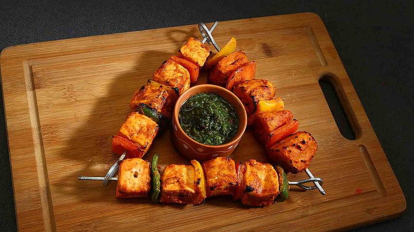

Home
Paneer Tikka

Description
Paneer TIkka is a popular and delicious starter and snack where Paneer(Indian Cottage Cheese cubes) are
marinated in a spiced yogurt based marinade, arranged on skewers and grilled on a tandori setup, in the oven or even on a tawa (pan)
Ingredients
- Paneer (Indian Cottage Cheese)
- Curd/Yougurt
- Lemon Juice
- Mustard Oil
- Ground spices
- Kashmiri Red Chilli Powder
- Coriander Powder
- Turmeric Powder
- Garam Masala Powder
- Cumin Powder
- Dry Mango Powder (Aamchur)
- Ajwain (Carom Seeds)
- Chaat Masala
- Black Pepper Powder
- Bell Peppers(Capsicum)
- Onions
- Any other vegetables of your choice
- Skewers (Iron/Bamboo)
Steps of Preparation
- Peel, rinse and dice 1 medium sized onion in square shaped pieces (1-1.5 inches). Rinse and slice 1 small to medium sized capsicum in a similar manner.You can use tomatoes if you want.
- Cut the Paneer into small cubes
- Crush some pieces of ginger and some 6-7 garlic cloves to a fien paste.
- Put 200 grams hung curd (greek yogurt) in a bowl. With a whisk beat the curd lightly till smooth.
- Now add 1 tablespoons ginger garlic paste or 1 tablespoon crushed ginger garlic to the curd. Also add the spice powders and some salt to taste.
- Add some lemon juice into the marinade
- Add 1 tablespoon Mustard oil
- Mix it thoroughly.
- Add the cubed veggies and paneer into the marinade and let them sit in the refrigeratr for 2 hours
- Alternatively thread the cubed paneer and veggies on the skewers. If the ingredients are preheated before threading, grilling them will be much easier.
- Brush some oil over the threaded uncooked Paneer Tikka
- Place them on a tray and let them grill in a preheated oven for 7-10 minutes at 230 to 240 degrees celsius.
- After this cycle completes, remove the tray from the oven, turn the paneer tikka skewers and repeat the griling process.
- Remove once done. Serve the paneer tikka sprinkled with some chaat masala and lemon juice. Some green chutney on the side will be good.